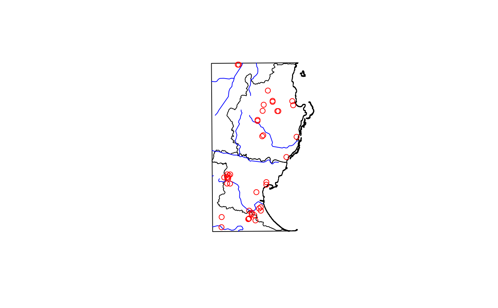
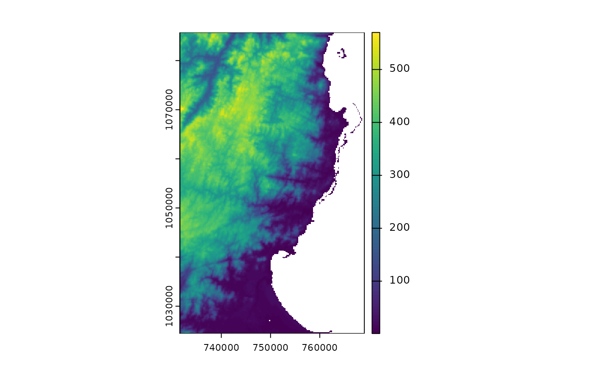
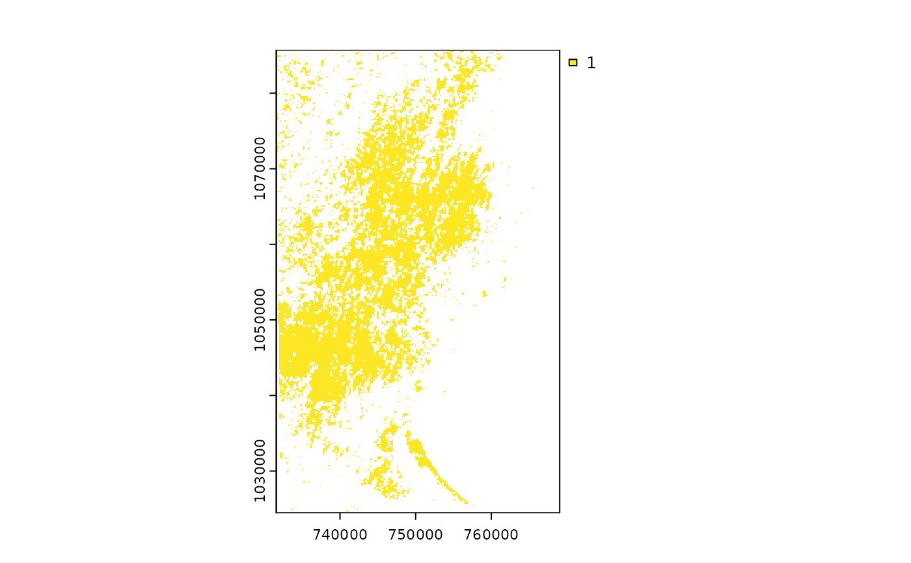
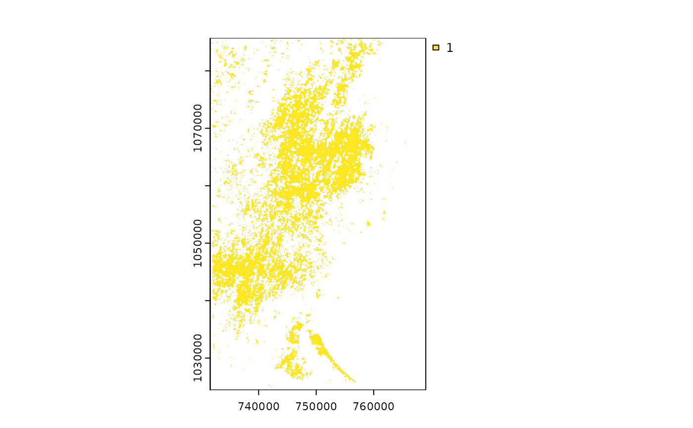
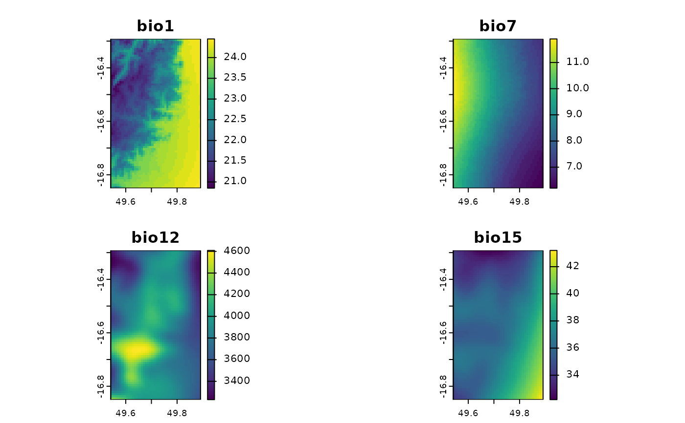
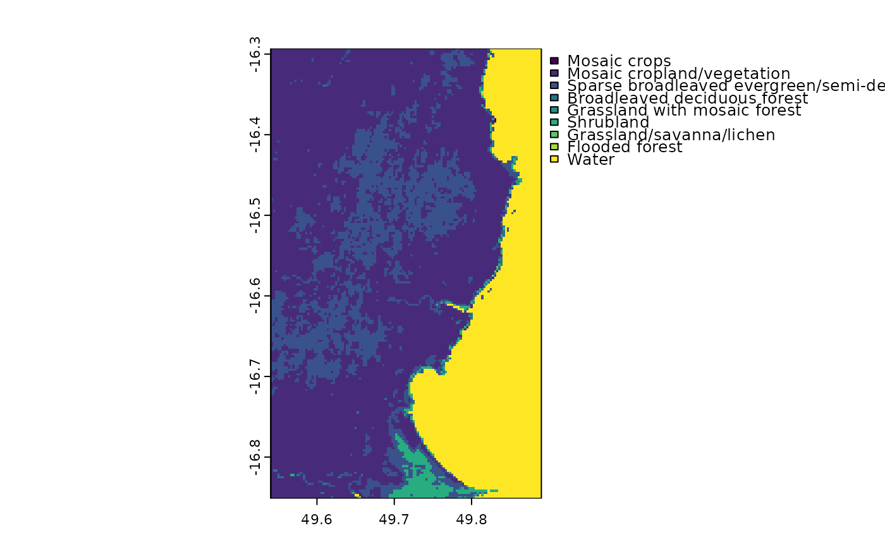

Borders of a selected portion of Madagascar
Usage
data(madCoast4)Examples
### vector data
library(sf)
# For vector data, we can use data(*) or fastData(*):
data(madCoast0) # same as next line
madCoast0 <- fastData("madCoast0") # same as previous
madCoast0
#> Simple feature collection with 1 feature and 68 fields
#> Geometry type: MULTIPOLYGON
#> Dimension: XY
#> Bounding box: xmin: 731581.6 ymin: 1024473 xmax: 768721.2 ymax: 1085686
#> Projected CRS: Tananarive (Paris) / Laborde Grid
#> OBJECTID ID_0 ISO NAME_ENGLISH NAME_ISO NAME_FAO NAME_LOCAL NAME_OBSOLETE
#> 1 1 134 MDG Madagascar MADAGASCAR Madagascar Madagascar
#> NAME_VARIANTS NAME_NONLATIN NAME_FRENCH NAME_SPANISH NAME_RUSSIAN
#> 1 Malagasy Republic Madagascar Madagascar Мадагаскар
#> NAME_ARABIC NAME_CHINESE WASPARTOF CONTAINS SOVEREIGN ISO2 WWW FIPS ISON
#> 1 مدغشقر 马达加斯加 Madagascar MG MA 450
#> VALIDFR VALIDTO POP2000 SQKM POPSQKM UNREGION1
#> 1 19581014 Present 15970364 594856.375 26.847428507427527 Eastern Africa
#> UNREGION2 DEVELOPING CIS Transition OECD WBREGION WBINCOME
#> 1 Africa 1 Sub-Saharan Africa Low income
#> WBDEBT WBOTHER CEEAC CEMAC CEPLG COMESA EAC ECOWAS IGAD IOC MRU
#> 1 Moderately indebted HIPC 1 1
#> SACU UEMOA UMA PALOP PARTA CACM EurAsEC Agadir SAARC ASEAN NAFTA GCC CSN
#> 1
#> CARICOM EU CAN ACP Landlocked AOSIS SIDS Islands LDC
#> 1 1 1 1
#> geometry
#> 1 MULTIPOLYGON (((755432.2 10...
plot(st_geometry(madCoast0))
madCoast4 <- fastData("madCoast4")
madCoast4
#> Simple feature collection with 2 features and 17 fields
#> Geometry type: MULTIPOLYGON
#> Dimension: XY
#> Bounding box: xmin: 731811.7 ymin: 1024542 xmax: 768726.5 ymax: 1085485
#> Projected CRS: Tananarive (Paris) / Laborde Grid
#> OBJECTID ID_0 ISO NAME_0 ID_1 NAME_1 ID_2 NAME_2 ID_3
#> 1070 1070 134 MDG Madagascar 5 Toamasina 17 Analanjirofo 79
#> 1098 1098 134 MDG Madagascar 5 Toamasina 17 Analanjirofo 82
#> NAME_3 ID_4 NAME_4 VARNAME_4 CCN_4 CCA_4 TYPE_4 ENGTYPE_4
#> 1070 Mananara 1070 Antanambe NA Fokontany Commune
#> 1098 Soanierana-Ivongo 1098 Manompana NA Fokontany Commune
#> geometry
#> 1070 MULTIPOLYGON (((760305.9 10...
#> 1098 MULTIPOLYGON (((754786.8 10...
plot(st_geometry(madCoast4), add = TRUE)
madRivers <- fastData("madRivers")
madRivers
#> Simple feature collection with 11 features and 5 fields
#> Geometry type: LINESTRING
#> Dimension: XY
#> Bounding box: xmin: 731627.1 ymin: 1024541 xmax: 762990.1 ymax: 1085580
#> Projected CRS: Tananarive (Paris) / Laborde Grid
#> First 10 features:
#> F_CODE_DES HYC_DESCRI NAM ISO NAME_0
#> 1180 River/Stream Perennial/Permanent MANANARA MDG Madagascar
#> 1185 River/Stream Perennial/Permanent MANANARA MDG Madagascar
#> 1197 River/Stream Perennial/Permanent UNK MDG Madagascar
#> 1216 River/Stream Perennial/Permanent UNK MDG Madagascar
#> 1248 River/Stream Perennial/Permanent UNK MDG Madagascar
#> 1256 River/Stream Perennial/Permanent UNK MDG Madagascar
#> 1257 River/Stream Perennial/Permanent UNK MDG Madagascar
#> 1264 River/Stream Perennial/Permanent UNK MDG Madagascar
#> 1300 River/Stream Perennial/Permanent UNK MDG Madagascar
#> 1312 River/Stream Perennial/Permanent UNK MDG Madagascar
#> geometry
#> 1180 LINESTRING (739818.2 108005...
#> 1185 LINESTRING (739818.2 108005...
#> 1197 LINESTRING (747857.8 108558...
#> 1216 LINESTRING (739818.2 108005...
#> 1248 LINESTRING (762990.1 105737...
#> 1256 LINESTRING (742334.2 106858...
#> 1257 LINESTRING (731803.7 105391...
#> 1264 LINESTRING (755911.6 104957...
#> 1300 LINESTRING (731871 1044531,...
#> 1312 LINESTRING (750186.1 103441...
plot(st_geometry(madRivers), col = "blue", add = TRUE)
madDypsis <- fastData("madDypsis")
madDypsis
#> Simple feature collection with 42 features and 9 fields
#> Geometry type: POINT
#> Dimension: XY
#> Bounding box: xmin: 735228.4 ymin: 1026056 xmax: 762442 ymax: 1085002
#> Projected CRS: Tananarive (Paris) / Laborde Grid
#> First 10 features:
#> gbifID license rightsHolder institutionCode year
#> 1 2397516155 CC_BY_NC_4_0 vononarbgkew iNaturalist 2019
#> 2 2397516017 CC_BY_NC_4_0 vononarbgkew iNaturalist 2019
#> 3 2397515145 CC_BY_NC_4_0 vononarbgkew iNaturalist 2019
#> 4 2268865622 CC_BY_4_0 Missouri Botanical Garden MO 2006
#> 5 2268863965 CC_BY_4_0 Missouri Botanical Garden MO 1991
#> 6 2268862328 CC_BY_4_0 Missouri Botanical Garden MO 1994
#> 7 2268862230 CC_BY_4_0 Missouri Botanical Garden MO 1991
#> 8 1928075921 CC0_1_0 The New York Botanical Garden NY 2006
#> 9 1677261542 CC_BY_NC_4_0 Landy Rita iNaturalist 2016
#> 10 1453257920 CC_BY_NC_4_0 mamy_andriamahay iNaturalist 2016
#> month day coordinateUncertaintyInMeters species
#> 1 8 11 4 Dypsis nodifera
#> 2 8 11 3 Dypsis nodifera
#> 3 8 11 3 Dypsis nodifera
#> 4 9 14 NA Dypsis betsimisarakae
#> 5 10 10 NA Dypsis nodifera
#> 6 10 23 NA Dypsis nodifera
#> 7 10 11 NA Dypsis nodifera
#> 8 9 15 NA Dypsis integra
#> 9 6 11 17 Dypsis lastelliana
#> 10 11 29 21 Dypsis lastelliana
#> geometry
#> 1 POINT (744929.8 1028994)
#> 2 POINT (745240.1 1029239)
#> 3 POINT (745067.4 1029098)
#> 4 POINT (737649.4 1044160)
#> 5 POINT (760879.5 1071766)
#> 6 POINT (748297.4 1064593)
#> 7 POINT (747876.6 1038768)
#> 8 POINT (737901.5 1044806)
#> 9 POINT (749428.6 1033303)
#> 10 POINT (745272.7 1032050)
plot(st_geometry(madDypsis), col = "red", add = TRUE)

### raster data
library(terra)
# For raster data, we can get the file directly or using fastData(*):
rastFile <- system.file("extdata/madElev.tif", package="fasterRaster")
madElev <- terra::rast(rastFile)
madElev <- fastData("madElev") # same as previous two lines
madElev
#> class : SpatRaster
#> dimensions : 512, 313, 1 (nrow, ncol, nlyr)
#> resolution : 119.7031, 119.7031 (x, y)
#> extent : 731581.6, 769048.6, 1024437, 1085725 (xmin, xmax, ymin, ymax)
#> coord. ref. : Tananarive (Paris) / Laborde Grid
#> source : madElev.tif
#> name : madElev
#> min value : 1
#> max value : 570
plot(madElev)

madForest2000 <- fastData("madForest2000")
madForest2000
#> class : SpatRaster
#> dimensions : 512, 313, 1 (nrow, ncol, nlyr)
#> resolution : 119.7031, 119.7031 (x, y)
#> extent : 731581.6, 769048.6, 1024437, 1085725 (xmin, xmax, ymin, ymax)
#> coord. ref. : Tananarive (Paris) / Laborde Grid
#> source : madForest2000.tif
#> name : madForest2000
#> min value : 1
#> max value : 1
plot(madForest2000)

madForest2014 <- fastData("madForest2014")
madForest2014
#> class : SpatRaster
#> dimensions : 512, 313, 1 (nrow, ncol, nlyr)
#> resolution : 119.7031, 119.7031 (x, y)
#> extent : 731581.6, 769048.6, 1024437, 1085725 (xmin, xmax, ymin, ymax)
#> coord. ref. : Tananarive (Paris) / Laborde Grid
#> source : madForest2014.tif
#> name : madForest2014
#> min value : 1
#> max value : 1
plot(madForest2014)

# multi-layer rasters
madChelsa <- fastData("madChelsa")
madChelsa
#> class : SpatRaster
#> dimensions : 67, 42, 4 (nrow, ncol, nlyr)
#> resolution : 0.008333333, 0.008333333 (x, y)
#> extent : 49.54153, 49.89153, -16.85014, -16.29181 (xmin, xmax, ymin, ymax)
#> coord. ref. : lon/lat WGS 84 (EPSG:4326)
#> source : madChelsa.tif
#> names : bio1, bio7, bio12, bio15
#> min values : 20.85, 6.2, 3230.9, 32.2
#> max values : 24.45, 11.9, 4608.9, 43.2
plot(madChelsa)

madPpt <- fastData("madPpt")
madTmin <- fastData("madTmin")
madTmax <- fastData("madTmax")
madPpt
#> class : SpatRaster
#> dimensions : 9, 6, 12 (nrow, ncol, nlyr)
#> resolution : 6082.837, 6082.837 (x, y)
#> extent : 726346.3, 762843.4, 1026783, 1081528 (xmin, xmax, ymin, ymax)
#> coord. ref. : Tananarive (Paris) / Laborde Grid
#> source : madPpt.tif
#> names : ppt01, ppt02, ppt03, ppt04, ppt05, ppt06, ...
#> min values : 344, 343, 343, 246, 146, 161, ...
#> max values : 379, 401, 442, 395, 265, 261, ...
madTmin
#> class : SpatRaster
#> dimensions : 9, 6, 12 (nrow, ncol, nlyr)
#> resolution : 6082.837, 6082.837 (x, y)
#> extent : 726346.3, 762843.4, 1026783, 1081528 (xmin, xmax, ymin, ymax)
#> coord. ref. : Tananarive (Paris) / Laborde Grid
#> source : madTmin.tif
#> names : tmin01, tmin02, tmin03, tmin04, tmin05, tmin06, ...
#> min values : 21, 21, 20, 19, 17, 16, ...
#> max values : 23, 23, 23, 22, 20, 19, ...
madTmax
#> class : SpatRaster
#> dimensions : 9, 6, 12 (nrow, ncol, nlyr)
#> resolution : 6082.837, 6082.837 (x, y)
#> extent : 726346.3, 762843.4, 1026783, 1081528 (xmin, xmax, ymin, ymax)
#> coord. ref. : Tananarive (Paris) / Laborde Grid
#> source : madTmax.tif
#> names : tmax01, tmax02, tmax03, tmax04, tmax05, tmax06, ...
#> min values : 29, 29, 29, 28, 27, 25, ...
#> max values : 31, 31, 30, 30, 28, 27, ...
# RGB raster
madLANDSAT <- fastData("madLANDSAT")
madLANDSAT
#> class : SpatRaster
#> dimensions : 344, 209, 4 (nrow, ncol, nlyr)
#> resolution : 180, 180 (x, y)
#> extent : 344055, 381675, -1863345, -1801425 (xmin, xmax, ymin, ymax)
#> coord. ref. : WGS 84 / UTM zone 39N (EPSG:32639)
#> source : madLANDSAT.tif
#> names : band2, band3, band4, band5
#> min values : 15, 23, 22, 25
#> max values : 157, 154, 158, 166
plotRGB(madLANDSAT, 4, 1, 2, stretch = "lin")
# categorical raster
madCover <- fastData("madCover")
madCover
#> class : SpatRaster
#> dimensions : 201, 126, 1 (nrow, ncol, nlyr)
#> resolution : 0.002777778, 0.002777778 (x, y)
#> extent : 49.54028, 49.89028, -16.85139, -16.29306 (xmin, xmax, ymin, ymax)
#> coord. ref. : lon/lat WGS 84 (EPSG:4326)
#> source : madCover.tif
#> categories : Short, Long
#> name : Short
#> min value : Mosaic crops
#> max value : Water
madCover <- droplevels(madCover)
levels(madCover) # levels in the raster
#> [[1]]
#> Value Short
#> 1 20 Mosaic crops
#> 2 30 Mosaic cropland/vegetation
#> 3 40 Sparse broadleaved evergreen/semi-deciduous forest
#> 4 50 Broadleaved deciduous forest
#> 5 120 Grassland with mosaic forest
#> 6 130 Shrubland
#> 7 140 Grassland/savanna/lichen
#> 8 170 Flooded forest
#> 9 210 Water
#>
nlevels(madCover) # number of categories
#> [1] 0
catNames(madCover) # names of categories table
#> [[1]]
#> [1] "Value" "Short" "Long"
#>
plot(madCover)
